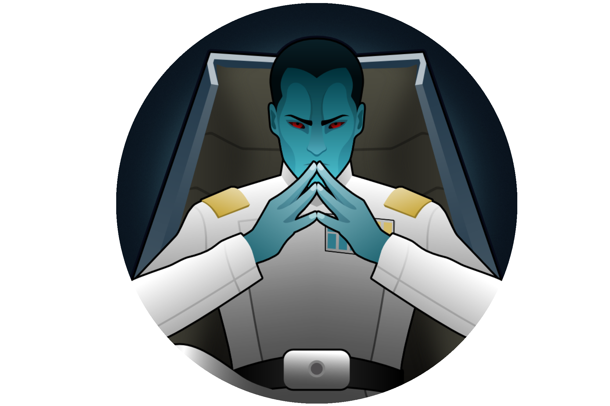

Neronix17
This is the official wiki for all Outpost 21 information, (eventually) containing details of every single thing in our mods. Below is a listing of all mods currently on this wiki, some of the smaller ones may be in a combined Micro-Mods section if they don't warrant having a page for what they have in them.
Below you'll find a listing of all of my currently supported mods which also have info pages. Any missing are either small enough they didn't warrant one or no longer supported, in which case they'll be unlisted on the Steam Workshop anyway.
Mainline Mods
These mods are my mainline mods, frameworks, franchise based ones, and even some original ones occasionally.
[O21] Toolbox
Framework
The Toolbox is my core framework mod, used in most of my other mods in some form, providing a load of code to be reused among many mods.
[O21] Outer Rim Galaxies
All-In-One Mod
All-In-One Star Wars mod, highly configurable. Still being developed, eras are being added in phases, eventually spanning the whole of Star Wars.

[O21] Subpersona Shells
Robot Mod
Adds a type of robot controlled by the player to do specific tasks based on cartridges, think of it as a SNES in robot form.
[O21] Extended Hair
Hair Mod
Bunch of additional hairstyles, with more being added occasionally.
[O21] Vanilla Hair Retextured
Retexture
Simple retexture of the vanilla hairs, making them high resolution and re-designing some of the more out of place ones.
[O21] Vanilla Beards Retextured
Retexture
Simple retexture of the vanilla beards, making them high resolution and removing the gradient from the outline.
Outland Series
Series of mods based on lore of my own making. The intended result of using all modules once it's completed will be a total conversion of RimWorld to being medieval fantasy with elements of steampunk, dieselpunk, clockpunk, and magipunk depending on the modules you use. The series is a long way off being in a completed state, however the individual modules can be used without the others in most cases, outside of the Core mod which is required for the rest.
[O21] Outland - Core
Core Mod
This is a required core mod for any Outland module, used as a container for any content used by more than one other module.
[O21] Eastborn Empire
Expansion Module
Adds a number of Japanese inspired apparels, buildings, weapons and more along with a faction of Elves using the gear.